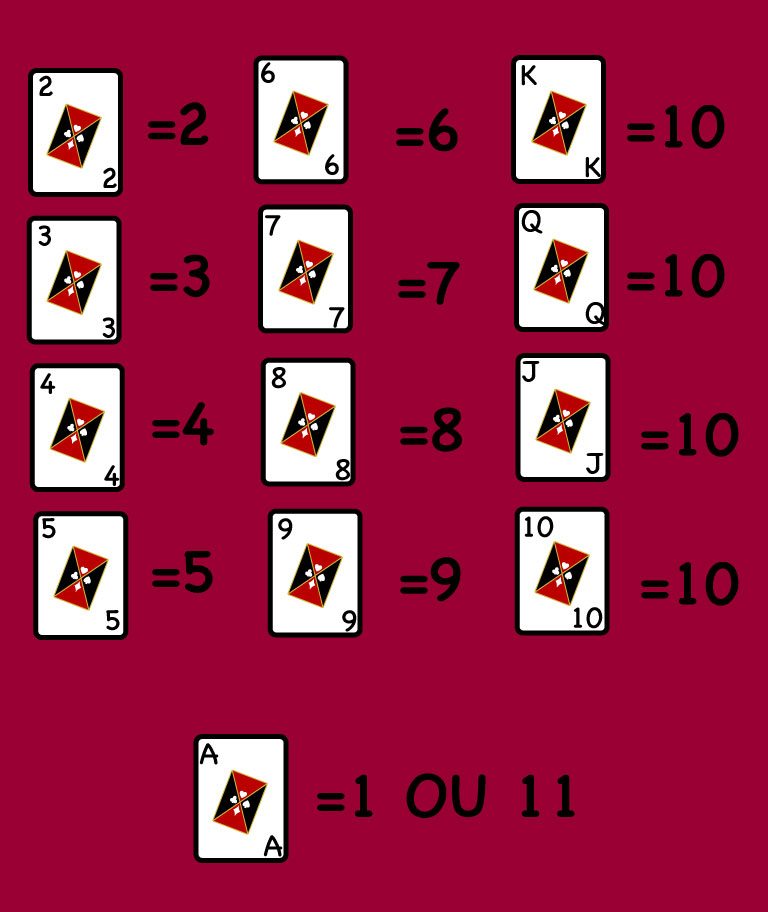

BLACKJACK é um jogo no qual o jogador precisa somar mais pontos com as suas cartas que o dealer, também chamado de croupier, sem ultrapassar 21. Se, com as 2 primeiras cartas, o jogador conseguir 21 pontos, terá um “Blackjack”.
QUAL A FUNÇÃO DO DEALER?
◉ O dealer tem diversas funções, sendo que uma das principais é garantir que as regras do jogo sejam cumpridas.
◉ Além disso, ele dá as cartas, contas as fichas, atende aos pedidos dos jogadores quando pedem mais cartas e calcula os resultados das partidas ou seja, é o profissional responsável por dar andamento ao jogo, mantendo a ordem e a organização para que o jogo flua da melhor forma possível.
GLOSSÁRIO
BALANÇO: dinheiro disponível.
BOTÃO DISTRIBUIR (dealer): quem começa o envio das cartas na rodada.
LIMITE DA MESA : valor mínimo e máximo da aposta em uma rodada.
CAIXA DE APOSTAS : lugar para depositar fichas e receber pagamentos.
BOTÃO DOBRAR : dobra a aposta no momento apropriado.
VALOR DAS CARTAS NO BLACKJACK
◉ O “A” vale 1 ou 11 pontos.
◉ “J”, “Q”, “K” valem 10 pontos.
◉ As demais cartas têm seu próprio valor.

PRINCIPAIS JOGADAS DO BLACKJACK
PARAR (Stand) : no geral, os jogadores mantêm as cartas quando há soma de 16 a 21.
PEDIR CARTA (Hit):pode pedir quantas quiser, desde que não exceda a soma 21.
MESA BLACKJACK : quando tem uma mão boa, pode dobrar a aposta, recebendo apenas uma carta adicional.
SEGURO(Insurance) : se o croupier tiver um Ás na carta virada para cima, servirá como um seguro para você se proteger de um possível Blackjack.
QUANDO DIVIDIR, DOBRAR OU DESISTIR
DEPENDENDO DAS DUAS PRIMEIRAS CARTAS DISTRIBUÍDAS PARA VOCÊ, EXISTEM OPÇÕES COMPLEMENTARES DE JOGO:
DESISTR :o jogador pode desistir antes de realizar outra ação, recuperando a metade do que apostou.
DOBRAR :um jogador pode dobrar a aposta se tiver 9, 10 ou 11 pontos. Se dobrar, o dealer distribuirá uma carta mais ao jogador e terminará o turno.
DIVIDIR :se as duas primeiras cartas tiverem o mesmo valor, podem ser divididas em duas jogadas, cada uma com sua aposta. Só pode dividir uma vez e não pode ter “Blackjack”.
AGORA QUE VOCÊ SABE A TEORIA DO BLACKJACK ,CHEGAMOS AO FINAL ONDE VOCÊ APRENDERERÁ A:
COMO JOGAR BLACKJACK